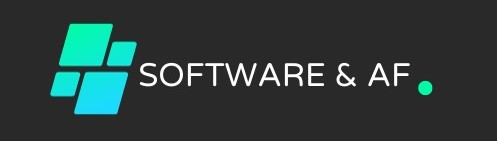

El software es fundamental para avanzar en la sociedad, la
economía y la tecnología, y su relevancia aumentará a medida
que las soluciones digitales continúen siendo fundamentales en
nuestra vida cotidiana.
Disciplina que se enfoca en diseñar, desarrollar y gestionar
sistemas complejos, integrando hardware, software y procesos
para resolver problemas y satisfacer necesidades de manera
eficiente y efectiva.
Esta área de estudio abarca una amplia gama de aplicaciones,
desde sistemas informáticos y de comunicación hasta sistemas
de transporte y de energía.
Los
ingenieros de sistemas
trabajan en la planificación, implementación y mejora de
sistemas, teniendo en cuenta aspectos técnicos, económicos y
sociales para lograr soluciones óptimas.
Ademas de que Impulsa la innovación, protege la información y
mejora la eficiencia. Sin ella, el mundo moderno no sería
posible. ¡Valoremos y apoyemos esta disciplina esencial!
Ingeniería de software
"Disciplina que abarca todos los aspectos de la producción de
software."
Se centra en la aplicación de principios y técnicas de la
ingeniería para el diseño, desarrollo, mantenimiento y gestión
de software. Su objetivo principal es crear software de alta
calidad de manera eficiente y efectiva, cumpliendo con los
requisitos del cliente. Esto implica planificar, diseñar,
codificar, probar y mantener programas y sistemas
informáticos, siguiendo un enfoque sistemático y metodológico
para garantizar la fiabilidad, el rendimiento y la seguridad
del software. La
ingeniería de software
abarca desde aplicaciones simples hasta sistemas complejos y
se basa en estándares y buenas prácticas para garantizar la
entrega exitosa de soluciones de software.
Arquitectura de software
La arquitectura de software se refiere a la estructura
fundamental y el diseño de un sistema de software. Es como el
plano o la estructura conceptual que guía la construcción de
un edificio. La arquitectura de software define cómo los
diferentes componentes del sistema interactúan entre sí, cómo
se organizan y cómo se cumplen los requisitos funcionales y no
funcionales, como la eficiencia y la escalabilidad. Una buena
arquitectura de software proporciona una base sólida para el
desarrollo, facilitando la comprensión, la modificación y la
expansión del sistema a medida que evoluciona con el tiempo.
En resumen, la
arquitectura de software
es el esqueleto sobre el cual se construye un sistema de
software.
Ingeniería de redes y comunicaciones
Los ingenieros de redes y comunicaciones diseñan arquitecturas
de redes, seleccionan equipos y tecnologías adecuadas,
establecen protocolos de comunicación, garantizan la seguridad
de los datos y optimizan el rendimiento de las redes. También
se ocupan de resolver problemas y mantener la infraestructura
de comunicación en funcionamiento. Esta disciplina es
fundamental en la actualidad, ya que las redes y las
comunicaciones son vitales en entornos empresariales y de
consumo, permitiendo la conectividad global y el acceso a
servicios en línea. La
ingeniería de redes y comunicaciones
desempeña un papel crucial en la expansión y la mejora de la
infraestructura de comunicaciones en todo el mundo.
Quiénes somos?
Software & AF
¡Bienvenidos a Software & AF: Tu Destino para el Desarrollo y
Aprendizaje de Software! 
Mi nombre es Andres Felipe Osorio Quintero, cofundador de
Software & AF 2024 Durante mi carrera, he
tenido el privilegio de trabajar en el emocionante y dinámico
campo de la tecnología.
Y somos un proyecto especializado en brindar asesoría experta
en desarrollo de software y ofrecemos cursos de alta calidad a
través de la plataforma en línea. Ya sea que seas un
profesional de la programación en busca de perfeccionar tus
habilidades o un principiante que está dando sus primeros
pasos en el mundo del desarrollo de software.
En Software & AF encontrarás un compañero de confianza para
guiarte en tu camino hacia el éxito.
Qué hacemos?
En Software & AF, estamos comprometidos en ayudarte a
alcanzar tus objetivos en el mundo del desarrollo de
software. Nuestra pasión es tu éxito, y estamos emocionados
de ser tu socio en este apasionante viaje. Únete a nosotros
hoy mismo y descubre cómo podemos transformar tus sueños
tecnológicos en realidad.
Asesoría Personalizada:
Nuestro equipo de expertos en desarrollo de software está
listo para responder tus preguntas, resolver problemas y
ofrecer soluciones que impulsen tus proyectos.
Cursos en Línea:
Ofrecemos una amplia gama de cursos en línea diseñados para
adaptarse a todos los niveles de experiencia, desde
principiantes hasta avanzados. Aprende a tu propio ritmo y
domina las últimas tecnologías.
Mentoría Profesional:
¿Necesitas un mentor de confianza para tu desarrollo
profesional? Nuestros mentores están aquí para brindarte
orientación y apoyo personalizado.
Mentores
"La paciencia y la persistencia son las claves del éxito en
el desarrollo de software."
""El software es un reflejo de cómo pensamos, cómo
organizamos y cómo solucionamos problemas.""
Roger s. Pressman
"No estoy en esto por el dinero. Me siento mucho más
orgulloso cuando alguien dice que el software que escribí
es útil para ellos."
Linus Torvalds
"La simplicidad, la claridad y la buena organización son
esenciales cuando se escribe código. La complejidad es el
enemigo del software."